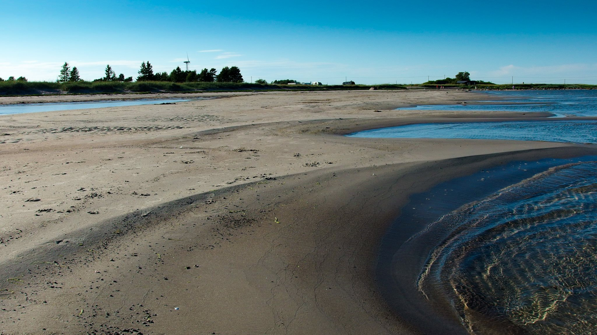
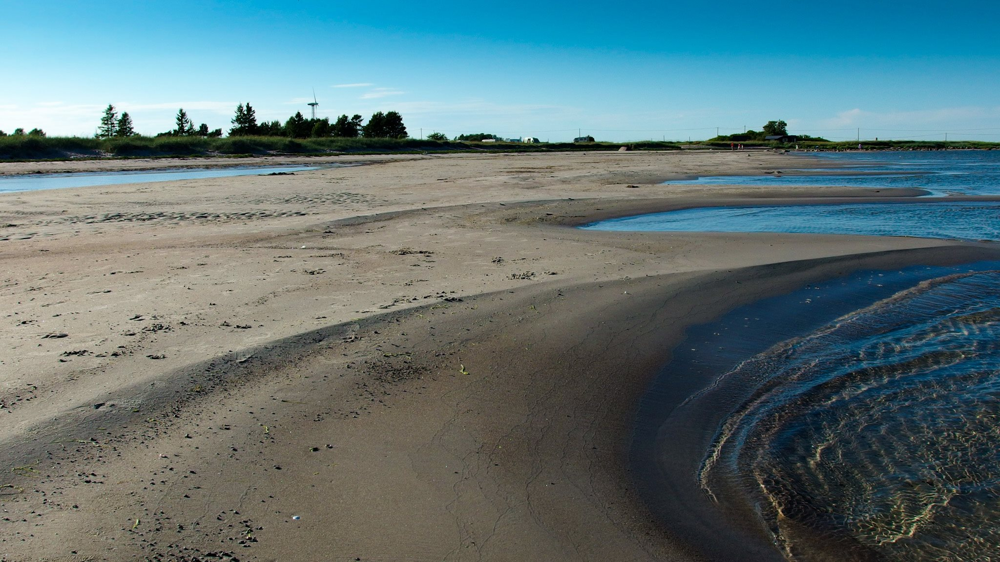
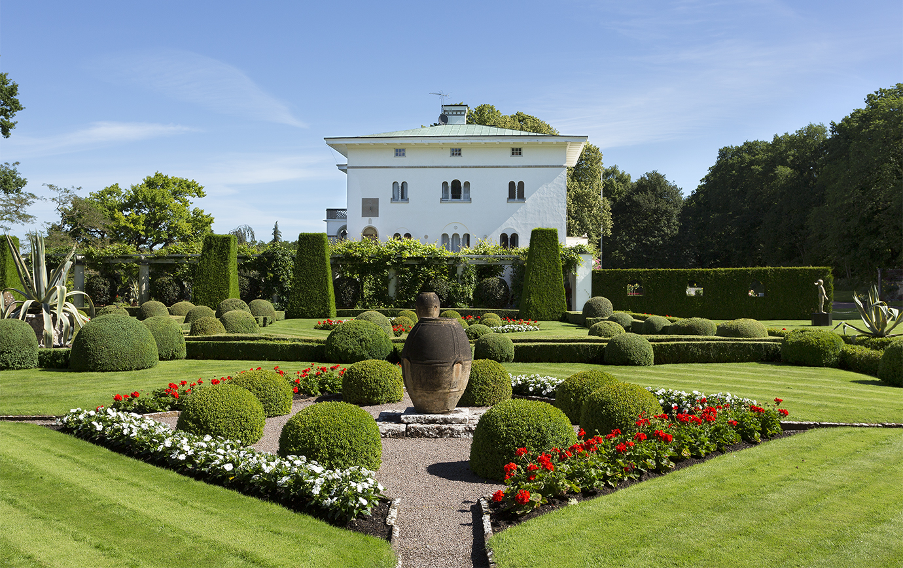
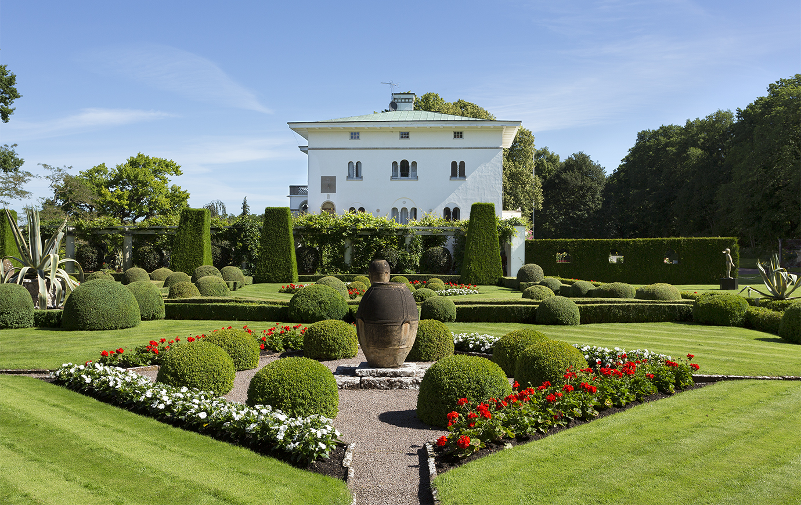
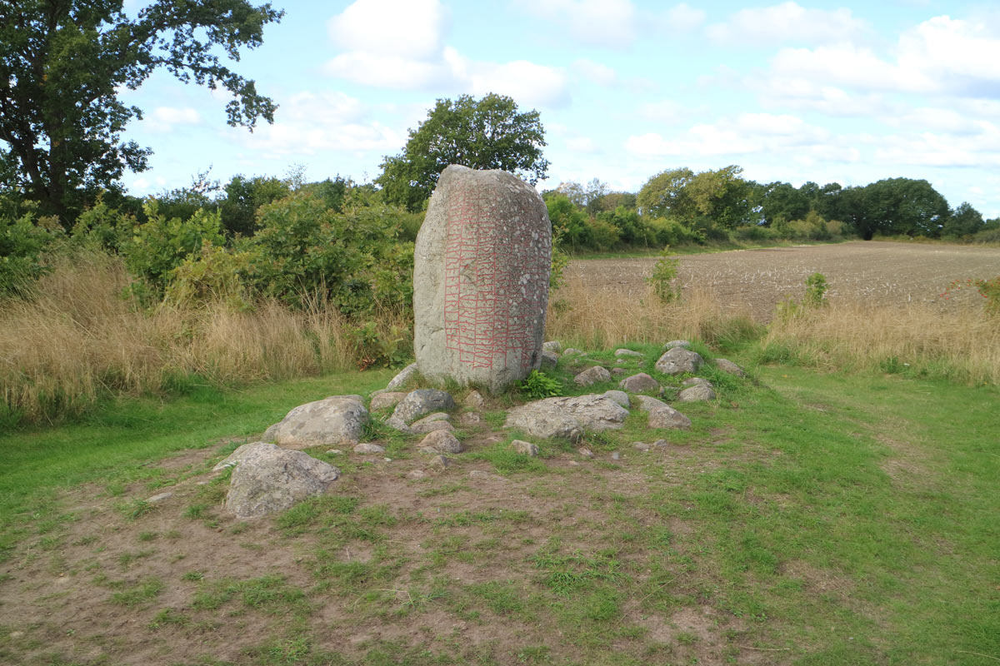
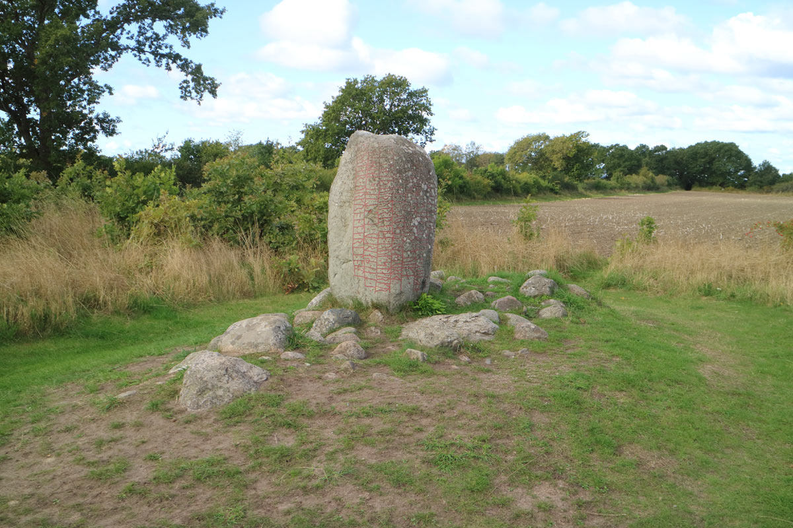
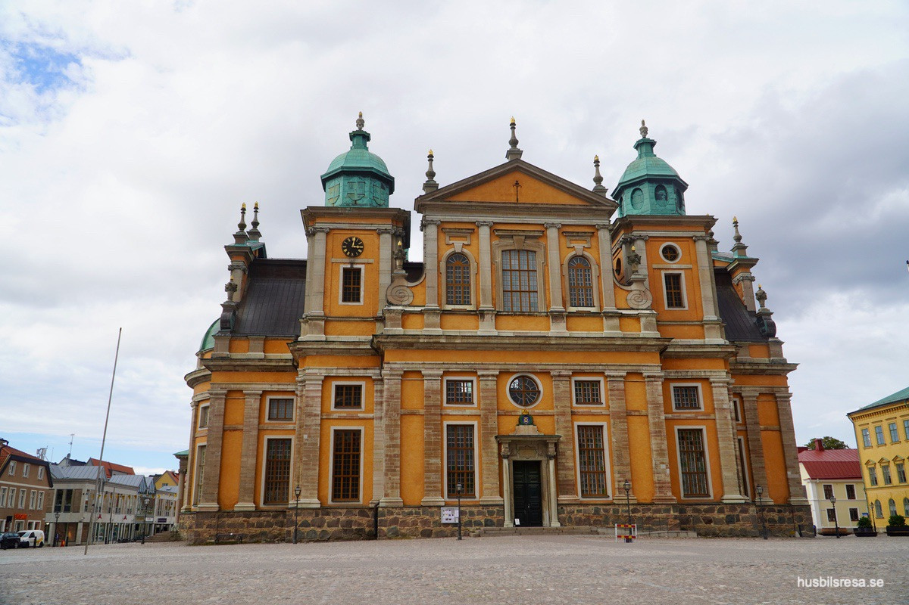
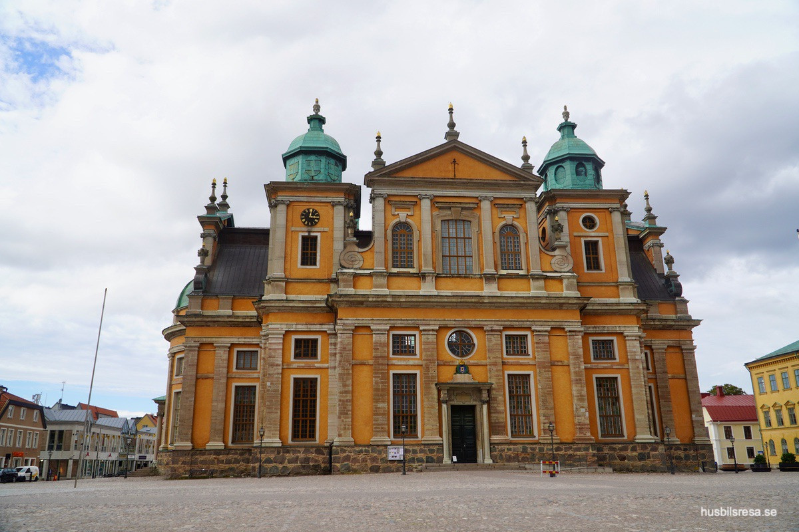
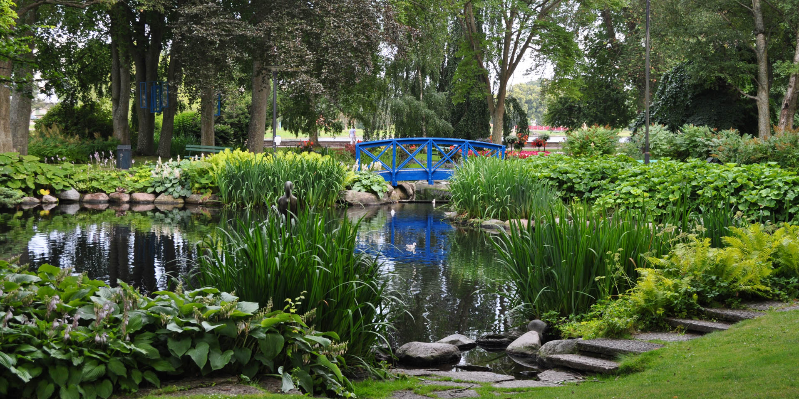
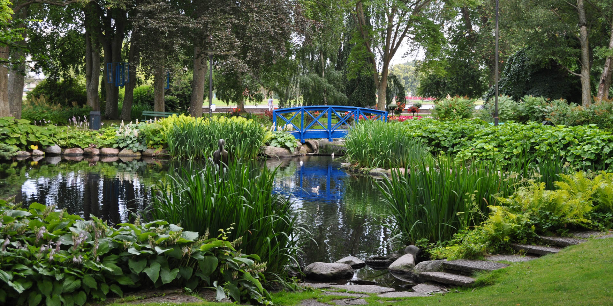

Ekerum Resort Öland
Öland, Kalmar, och Ekerums Resort är fantastiska platser som erbjuder en uppsjö av aktiviteter för dem som vill spendera mer tid på hotellet eller göra det till en semester resa i området.
Ekerums Resort har två fantastiska golfbanor, Långe Jan och Långe Erik. Båda banorna bjuder på 18 hål av hög klass.
Golf kan bokas separat, eller fråga när ni bokar ert boende om möjlighet för golfpaket.
Pris: 650 kr


Hotellet har en spa avdelning i källaren som erbjuder följande:
- IR bastu och aroma bastu
- Inomhuspool
- Jacuzzi
- Fotbad
- Isbad
- Massagestolar
- Relaxavdelning
Det finns även spa behandlingar att boka för den som känner sig sugen på det.
Pris: Från 395kr


Ekerum Resort erbjuder 4 st dubbelbanor och 2 st singelbanor för padel, alla utomhus.
Det finns även 2 st hardcout banor för tennis.
Padel & Tennis bokas här


För den som tycker om att vistas utomhus och vara aktiv finns det många möjligheter på Ekerum.
Hotellet har både en boulebana samt en hinderbana om man vill prova på det.
Det finns även ett vackert naturområde med slingor som man kan springa, promenera, eller cykla på.
Cyklar finns att hyra på hotellet. En karta med dem olika slingorna hittas här


Öland har över 50 badplatser att välja mellan!:
Böda Sand – Ölands mest kända strand. Här finns camping, restauranger och aktiviteter.
Kalkbrottet GrönhögenEtt vattenfyllt gammalt kalkbrott på Södra Öland
Köpingsvik – Populär sandstrand nära Borgholm.
Lyckesand & Fagerrör – Vackra stränder i Bödabukten.
Bläsinge – Lugn och avskild strand på östra sidan med fin sand och långgrunt vatten.
Ekerumsbadet – Nära hotellet! Sandstrand vid en vik av Kalmarsund, skyddad från vind och vågor.
 

Öland bjuder på en fantastisk mix av natur, historia och kultur:
Borgholms Slottsruin – En av Ölands mest besökta sevärdheter. Guidade turer och utställningar.
Solliden – Kungafamiljens sommarbostad med vacker slottspark.
Långe Jan – Sveriges högsta fyr (41,6 meter) på Ölands sydligaste udde. Vid Ottenby kan man även se sälar och fågelskåda.
Långe Erik – Långe Jans syskon, denna fyren ligger på Ölands norra udde.
Trollskogen – Naturreservat på norra Öland med vandringsled och skeppsvraket Swiks.
Byrums Raukar – Spektakulära stenformationer på nordvästra Öland, särskilt vackert vid solnedgång.
Stora Alvaret – UNESCO-världsarv med unik natur, vilda orkidéer och betande djur. Perfekt för vandringar.
Lerkaka Väderkvarnar – Några av Ölands vackraste och mest välskötta väderkvarnar.
 



Öland är känt för fornlämningar, med över 15 fornborgar och hundratals gravar från järnåldern och vikingatiden.
Eketorps Borg – Sveriges enda återuppbyggda fornborg.
Gråborg – Ölands största fornborg med en diameter på 210 x 160 meter.
Ismantorps Borg – En fornborg mitt ute på Alvaret med 88 bevarade husgrunder och nio portar i ringmuren.
Sandby Borg – Känd från Sveriges Historia för den massaker som hände här.
Gettlinge Gravfält – Ett av Ölands största gravfält, nästan 2 kilometer långt med över 200 bevarade gravar.
Karlevistenen – En runsten från slutet av vikingatiden (ca år 1000).
Bårby Borg – Fornborg från järnåldern med vacker utsikt över landskapet.
 


Kalmar är en charmig historisk stad och vår nuvarande hemstad.
Kalmar Slott – Ett av Skandinaviens bäst bevarade renässansslott. Guidade turer och utställningar.
Kalmar Domkyrka – En av Sveriges vackraste barockbyggnader från 1600-talet, belägen på Stortorget.
Kvarnholmen – Kalmars charmiga stadskärna med kullerstensgator, historiska byggnader, shopping och restauranger.
Stadsparken – Vacker park intill slottet med monument, paviljonger och en 222 meter lång bänk.
Kalmar Konstmuseum – Konstmuseum med internationell profil.
 

 

Kalmarflundran – Guidad båttur genom stadens kanaler. Ca 1 timme med avgång från gästhamnen.
Stensö Friluftsområde – 2,5 km från centrum med badplats, klippbad, camping och äventyrspark.
Krusenstiernska Gården – Grön oas mitt i centrum med kulturhistoriska byggnader och mysigt trädgårdscafé.
Shopping i Kvarnholmen – Butiker, restauranger och caféer i historisk miljö.
Badplatser – Kattrumpans badplats och Kalmarsundsbadet.
Kött & Bar – Restaurang med bra kött och cocktails. Beläget på Larmtorget.
Västerport Bar & Bistro – Mysig restaurang i historiska 1600-talslokaler vid stadsporten.
Kallskänken – Vårt favoritstället för pizza. Kända för sin smörgåstårta pizza. Ligger strax utanför stadskärnan.
Storgatan 11 – Ett fantastisk ställe för bistro mat i hög klass.
Hattmakaren – Mellanrätter/Tapas koncept.
Ching A Ling – Vårt favoritställe för asiatiskt.
Blomlöfs – Specialister på fisk och skaldjur.